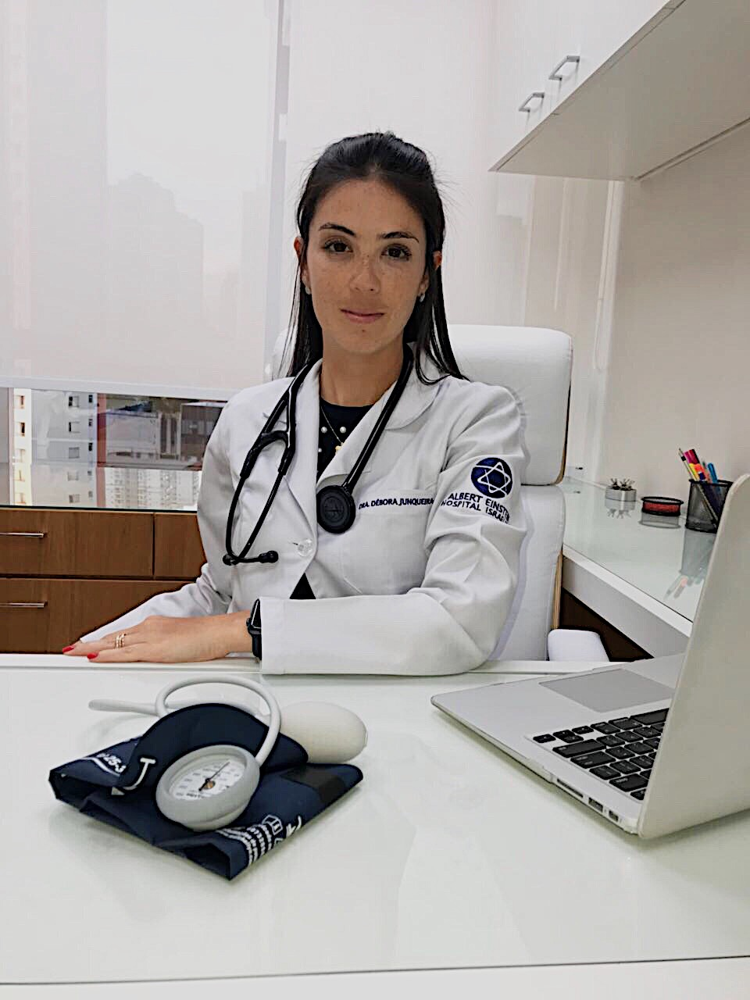

Dra Débora Leonor de Mello Junqueira
CRM 158.986

- • Graduação em Medicina: Universidade Regional de Blumenau
- • Residência em Clínica Médica: Universidade Federal de Santa Catarina
- • Residência em Cardiologia: Universidade Federal de São Paulo
- • Residência em Miocardiopatias e Transplante Cardíaco: Universidade Federal de São Paulo
- • Título de Especialista pela Sociedade Brasileira de Cardiologia.
Atuação:
- • Hospital Israelita Albert Einstein: Pronto atendimento clínico e cardiológico, Ensino e Assistência Hospitalar;
- • TotalCare: Ambulatório de Cardiologia e Insuficiência Cardíaca;
- • UNIFESP: Ambulatório de Insuficiência Cardíaca.
Filiação:
- • Sociedade Brasileira de Cardiologia;
- • SOCESP.
Dra Eliane Reiko Alves
CRM 130.040
- • Graduação em Medicina: Pontifícia Universidade Católica de São Paulo
- • Residência em Clínica Médica: Universidade Federal de São Paulo
- • Residência de Cardiologia: Universidade Federal de São Paulo
- • Residência em Miocardiopatias e Transplante Cardíaco: Universidade Federal de São Paulo
- • Título de Especialista pela Sociedade Brasileira de Cardiologia.
Atuação:
- • Hospital São Luiz Jabaquara: Equipe assistente em Cardiologia;
- • Hospital Alípio Corrêa Neto: Preceptora da Residência de Clínica Médica;
- • UNIFESP: Ambulatório de Insuficiência Cardíaca;
- • Instrutora do Curso de Suporte Avançado de vida em Insuficiência Cardíaca (SAVIC).
Filiação:
- • Sociedade Brasileira de Cardiologia
- • SOCESP